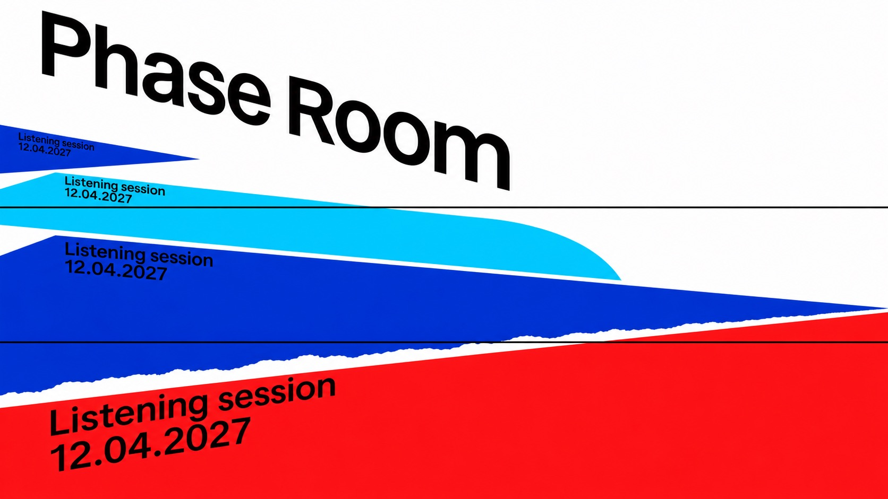
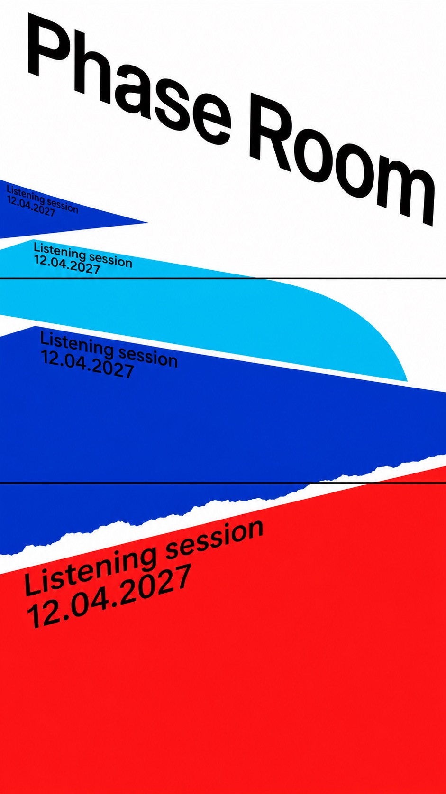
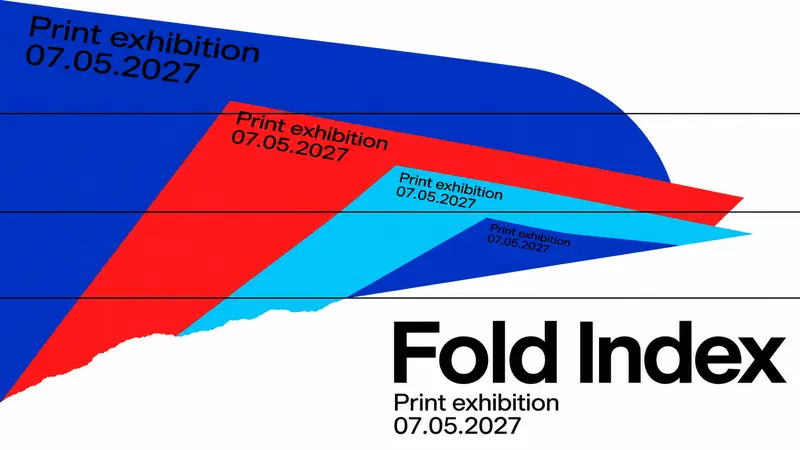
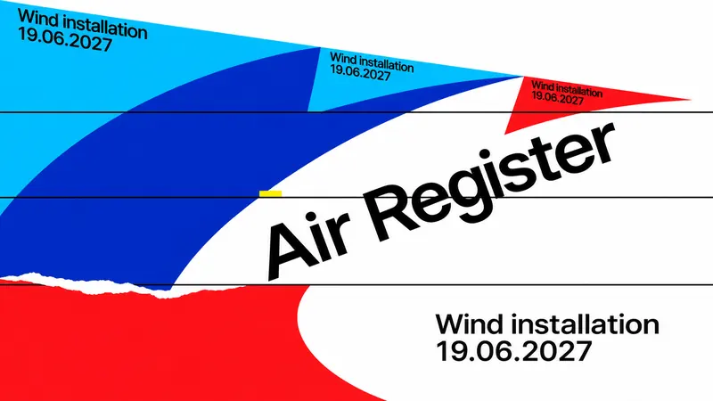
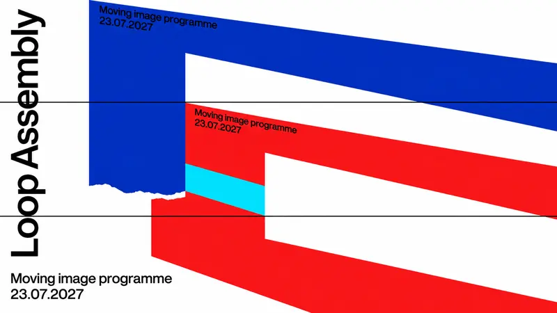

Type Posters · AI image style prompt
Oblique Interval
White-ground cultural posters with receding saturated colour panels, sliced arc-cut curves and mobile black grotesk type, unified by ultramarine and signal red.


4 example cases
Same style.json, different subjects. Each case's values are in the examples section of the JSON.



What this style does
White-ground cultural posters fusing receding saturated colour panels, sliced arc-cut curves and mobile black grotesk typography; ultramarine and signal red unify four distinct structures.
Signature traits
- Keep an abstract cultural-event poster with white ground, solid ink-colour geometry and no depicted scene or lighting.
- Share deep ultramarine and saturated signal red with black type; cyan or mid blue may support, and yellow or magenta remain sparse accents.
- Give geometry force through near/far scale jumps and oblique projection; in panel-led cases repeat a small text block on the shrinking top edges.
- Use R3 sectional rhythm: thin black horizontal rules crossing the structure and a local torn-paper edge, with large arc-cut sail curves in the wind case.
- Use R2 regular or medium black grotesk type on a strong mobile axis, separating large title scale from small programme information.
- Preserve broad calm unmarked surfaces, around half the frame, with one substantial geometric focal structure and strong asymmetrical crop tension.
style.json
{
"schema_version": "2.2",
"style_version": "2.0.0",
"style_name": "Oblique Interval",
"style_slug": "oblique-interval",
"style_summary": "White-ground cultural posters fusing receding saturated colour panels, sliced arc-cut curves and mobile black grotesk typography; ultramarine and signal red unify four distinct structures.",
"environment_variables": {
"ASPECT_RATIO": "9:16 or 16:9",
"STYLE_FIDELITY_ANCHORS": "Joined style anchors",
"SOURCE_CONTENT_TO_AVOID": "Joined source exclusions",
"MAIN_TEXT": "Exact fictional event title",
"SECONDARY_TEXT": "Exact programme descriptor",
"DATE_TEXT": "Exact fictional date",
"MOTIF": "Concrete abstract geometric hero",
"DESIGN_DIRECTION": "Case-specific placement and ratio adaptation"
},
"style_fidelity_anchors": [
"[CORE] Keep an abstract cultural-event poster with white ground, solid ink-colour geometry and no depicted scene or lighting.",
"[CORE] Share deep ultramarine and saturated signal red with black type; cyan or mid blue may support, and yellow or magenta remain sparse accents.",
"[CORE] Give geometry force through near/far scale jumps and oblique projection; in panel-led cases repeat a small text block on the shrinking top edges.",
"[CORE] Use R3 sectional rhythm: thin black horizontal rules crossing the structure and a local torn-paper edge, with large arc-cut sail curves in the wind case.",
"[CORE] Use R2 regular or medium black grotesk type on a strong mobile axis, separating large title scale from small programme information.",
"[CORE] Preserve broad calm unmarked surfaces, around half the frame, with one substantial geometric focal structure and strong asymmetrical crop tension.",
"[FLEX] Choose solid receding panels, sliced sail-like arcs or angular interrupted loops according to the case; capsules are optional in at most one case and never paired with a coral wedge.",
"[FLEX] Move titles among upper diagonal, lower horizontal stack, central oblique and vertical-left arrangements; change hero direction and accent placement."
],
"source_content_to_avoid": [
"All reference event, venue, artist, address and date wording, including Strelka, Sacha Mambo, All Night Long, True Blue, Gallery by Toko, Studio Onvervalst, Oxford St., Paddington, Kieler Woche and Juni 1991.",
"All reference artist names: Sigrid Calon, Jan van der Ploeg, Guido Nieuwendijk, Tonneke Sengers, Esther Tielemans, Vincent Uilenbroek and Jan Maarten Voskuil.",
"The exact R1 left-to-right three-panel blue-white-red silhouette; R2 tilted blue slab with white capsule perimeter and coral wedge.",
"Literal sailboats, regatta scenes, R3 fleet-and-wave silhouette with right-edge vertical title, yellow ray clusters, reference logos, watermarks and source layouts."
],
"visual_deconstruction": {
"genre": "Abstract graphic cultural-event posters; structural geometry is the hero.",
"grammar": "Flat inks, white negative ground, grotesk type, perspective scale, oblique axes, horizontal slicing.",
"signature": {
"R1": "Retain shrinking SOLID planes and repeated top-edge copy, but change procession direction, panel proportions, colour order and title hierarchy; no exact tricolour upright triptych.",
"R2": "Retain oblique regular grotesk and varied information scale; remove blue/coral palette and capsule-framed tilted sheet. No capsule is used in these four cases.",
"R3": "Retain arc-cut sail curves, horizontal rules and local torn contours; redistribute into one asymmetric wind structure rather than a fleet above sea with right-edge vertical type."
},
"fusion": {
"genre": "Shared by R1/R2/R3.",
"palette": "R1 ultramarine/signal-red/white foundation; R3 cyan and mid-blue support with optional tiny yellow or magenta; no R2 coral.",
"finish": "R1 clean flat panels plus R3 local torn edge only.",
"type": "R2 mobile oblique regular grotesk and size contrast, R1 repeated perspective headers, R3 optional vertical axis.",
"layout": "R1 shrinking solid planes lead cases 1 and 2; R3 sliced arcs lead case 3; case 4 combines angular scale-recursive frames with sectional offsets.",
"secondary": "R3 horizontal rules and local torn contours are visible; R2 contributes typography rather than capsules.",
"balance": "Target visible CORE contribution across series R1 42%, R2 20%, R3 38%; visual estimates, not measured shares. Each image assessed separately, no source above about half.",
"energy": "R1 quiet about 90%, R2 about 45%, R3 about 55%; fusion target 50-60% quiet surfaces including unmarked coloured panels."
},
"energy": {
"density": "About 50-60% calm unmarked surface; no demand for exactly measured percentage.",
"layering": "Two to five flat planes or sectional curve bands, no realistic depth.",
"disorder": "Clean surface with a local torn contour; no global grain or grunge.",
"tension": "Essential strong oblique axes, extreme scale change or crop pressure, without symmetrical emblem regularity."
},
"series_constants": {
"palette": "White ground, ultramarine + signal red, black type; optional cyan/mid blue, tiny yellow/magenta.",
"light": "None; flat ink.",
"kit": "Receding flat planes, repeated perspective headers, horizontal rules, local torn edges, arc sections or angular frames.",
"title": "Black regular/medium grotesk; position and angle change across cases."
}
},
"composition": {
"aspect_ratios": [
"9:16",
"16:9"
],
"system": "Independent native recomposition at both ratios; no padding, border mockups or crop-only conversion.",
"quiet_share": "50–60%",
"hierarchy": "One massive geometric structure, a readable event title, then descriptor and date; keep source-like cultural event register.",
"placement": "Case 1 upper-left descending title and lower-left-to-upper-right panels; case 2 lower-right horizontal title and upper-right-to-left low panels; case 3 central rising title and left-heavy sliced arcs; case 4 vertical-left title and cropped upper-right angular frames."
},
"typography": {
"family": "Regular to medium neutral neo-grotesk sans-serif, Helvetica-like; no condensed display or serif.",
"title": "Large black title on oblique, horizontal or vertical axis, always fully readable.",
"secondary": "Black compact event descriptor and date, exact case copy; no artist or venue names.",
"text_policy": "Title, subtitle and date are exact primary copy. Panel cases repeat the same subtitle/date block along top edges at decreasing scale. No source names or additional wording."
},
"color_palette": {
"white": "#FFFFFF",
"ultramarine": "#0936C9",
"signal_red": "#FF171E",
"cyan": "#08BEE0",
"mid_blue": "#078CC6",
"black": "#101116",
"yellow": "#F0E535",
"magenta": "#D7489D",
"roles": "White ground; ultramarine/red shared structural inks; cyan/mid-blue optional main supporting areas; yellow OR magenta optional under about 3%; black type/rules. Case subsets only, no coral."
},
"image_treatment": {
"medium": "Generated flat graphic raster with crisp shape boundaries and no scene lighting.",
"texture": "A short deckled seam on one geometric section only, fine contour variation; below 3% frame area. Remaining surfaces and type clean, no grain, no softness, no paper stain, no simulated wear.",
"depth": "Solid unshaded panels shrink into depth; all curves and frames remain flat, without extrusion."
},
"design_rules": [
"At least two cases use several shrinking solid perspective panels with repeated small text aligned to their top edges.",
"At least one case uses large arc-cut sail curves sliced by thin horizontal black rules.",
"White rounded capsules appear in at most one case, never paired with a coral wedge; these four cases use none.",
"Keep all event titles, subtitles and dates verbatim; repeat the small block only in panel-led cases.",
"Share white, ultramarine, signal red and grotesk typography but give every case a distinct hero, direction and title placement.",
"Assess visible contribution and same-author risk against every reference for every output."
],
"do": [
"Use large solid colour planes and unmistakable scale recession.",
"Keep negative space and local torn contours purposeful.",
"Check enlarged glyphs and per-reference resemblance independently before acceptance."
],
"avoid": [
"Source names, dates, venues, logos and exact source layouts.",
"R2 blue/coral slab and capsule frame, or a renamed copy of R1/R3.",
"Gradients, cast shadows, 3D render lighting, all-over grain, tiny central emblem or repetitive case layouts."
],
"prompt_template": "Design one finished abstract cultural-event poster in {ASPECT_RATIO}. Oblique Interval v2: white ground, deep ultramarine #0936C9 and saturated signal red #FF171E, black regular/medium grotesk typography. Optional R3 cyan or mid blue as specified; no coral. Required style system: {STYLE_FIDELITY_ANCHORS} Hero: {MOTIF} Composition: {DESIGN_DIRECTION} Exact title: \"{MAIN_TEXT}\". Exact subtitle: \"{SECONDARY_TEXT}\". Exact date: \"{DATE_TEXT}\". In panel cases, repeat the subtitle/date as the SAME small two-line block on each shrinking top edge, in matching perspective. Keep title readable and structural, about half the surface calm, flat unshaded shapes and a local torn contour. Native composition, no mockup. Exclude: {SOURCE_CONTENT_TO_AVOID}",
"negative_prompt": "Source wording, reference logos, copied layouts, coral, tilted blue capsule frame, rounded apertures, literal sailboats, sea panorama, shaded 3D, drop shadows, gradients, overall distress, extra copy, malformed primary letters, watermark, mockup.",
"examples": [
{
"case_name": "phase-room",
"values": {
"MAIN_TEXT": "Phase Room",
"SECONDARY_TEXT": "Listening session",
"DATE_TEXT": "12.04.2027",
"MOTIF": "Four SOLID broad low acoustic colour planes seen from an oblique overhead viewpoint, like flat parallelogram platforms with width four times their depth. A large signal-red foreground plane near bottom-right, ultramarine middle plane, cyan and smaller ultramarine planes climb toward upper-left in sharply shrinking scale. These are unperforated flat surfaces with NO upright wall/slab. Each carries the same small subtitle/date block ON its upper edge, slanted and scaled in its plane. Thin black horizontal rules slice across the planes, one displaced cyan curved-edge section and a short torn seam supply R3 geometry.",
"DESIGN_DIRECTION": "Portrait: four low wide planes form a vertical depth cascade from broad red lower-right foreground to tiny ultramarine upper-left background, separated by white gaps. Foreground surface width at least three times height, strongly foreshortened. Large regular grotesk title descends diagonally across upper white field. Landscape: low wide foreground red plane along bottom-right, smaller blue/cyan planes move diagonally up-left; title upper-left descending. No left-edge tall blue monolith and no R1 rightward upright fence. R3 horizontal slicing and arc-cut outer edge must visibly interact with broad surfaces, without making holes."
}
},
{
"case_name": "fold-index",
"values": {
"MAIN_TEXT": "Fold Index",
"SECONDARY_TEXT": "Print exhibition",
"DATE_TEXT": "07.05.2027",
"MOTIF": "Four SOLID low wide print sheets in oblique top view, spread as an asymmetrical stepped fan across the upper field: largest ultramarine sheet at upper-left, smaller signal-red then cyan then small ultramarine sheet curling toward centre-right. Every sheet is a broad shallow parallelogram, width three to four times its height, never a tall upright wall. The same small subtitle/date block rides INSIDE each top edge at decreasing size. A large arc-cut outer corner on the near sheet, horizontal black registration rules and a local torn lip combine R3 sectioning with R1 recession. No holes or capsules.",
"DESIGN_DIRECTION": "Portrait: low wide foreshortened sheets fan across upper half, biggest at upper-left and shrinking toward middle-right, each on a slightly different axis; lower-right white field holds the title in TWO horizontal lines, Fold above Index. Landscape: upper-left sheet is largest, sheets recede into centre-right through a stepped fan; lower-right title on two horizontal lines. Repeated headers stay on the sheet surfaces, not floating outside. Keep strong white gaps and angled sheet surfaces, no fence of upright panels. Make the broad sliced arc corner visible as part of near-sheet silhouette."
}
},
{
"case_name": "air-register",
"values": {
"MAIN_TEXT": "Air Register",
"SECONDARY_TEXT": "Wind installation",
"DATE_TEXT": "19.06.2027",
"MOTIF": "A monumental asymmetric arc-cut sail-like shape made from cyan, ultramarine and signal-red curved flat sections, sliced and displaced by three thin black horizontal rules. One very broad concave arc and one narrow opposing curve make an open wind passage, not rounded slots. A small torn contour at one horizontal join and a tiny yellow registration dash. No fleet, sea or capsule.",
"DESIGN_DIRECTION": "Portrait: arc mass fills left and middle, cut by frame at top-left; broad white passage opens toward right. Black title rises diagonally across central white passage; subtitle/date horizontal in lower-right white field. Landscape: arc sections spread left-to-centre with open white right field, diagonal title crosses the passage, metadata right-lower. Red is a substantial arc section; avoid R3 right-edge vertical title and full blue ground."
}
},
{
"case_name": "loop-assembly",
"values": {
"MAIN_TEXT": "Loop Assembly",
"SECONDARY_TEXT": "Moving image programme",
"DATE_TEXT": "23.07.2027",
"MOTIF": "Two enormous interrupted angular film-loop frames with square corners and unequal widths overlap in flat oblique projection; outer ultramarine frame cropped at top/right, smaller signal-red frame offset inside toward lower-left; one cyan flat splice. White angular windows, never round-ended. Two horizontal thin black rules slice the frame with slight sectional displacement, and a local torn splice edge. Extreme near/far scale jump.",
"DESIGN_DIRECTION": "Bold case. Portrait: upper-right heavy angular loop cropped hard; regular black title rotated vertically up the LEFT white channel, with subtitle and date horizontal at bottom-left. Landscape: huge angular frames enter top and right, title remains vertical in left white channel, metadata sits in lower-left white. Keep loops recognisably angular and interrupted, not a centred emblem or capsule perimeter."
}
}
],
"category": "Type Posters"
}